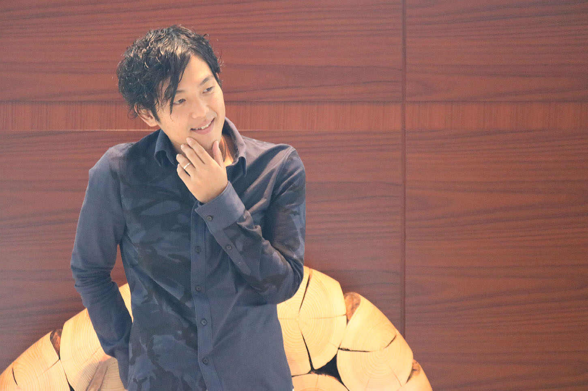
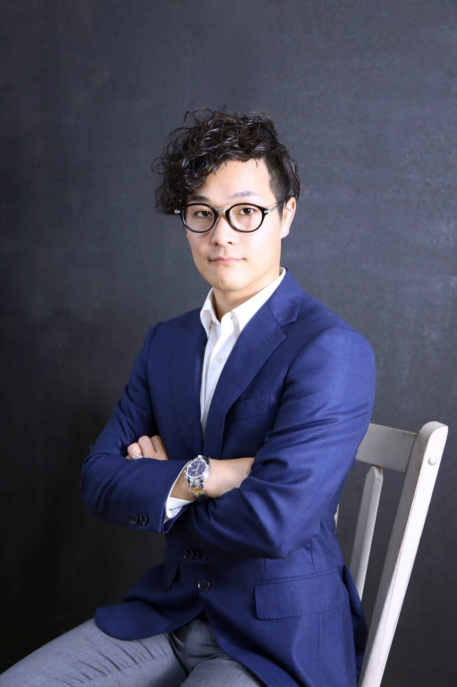
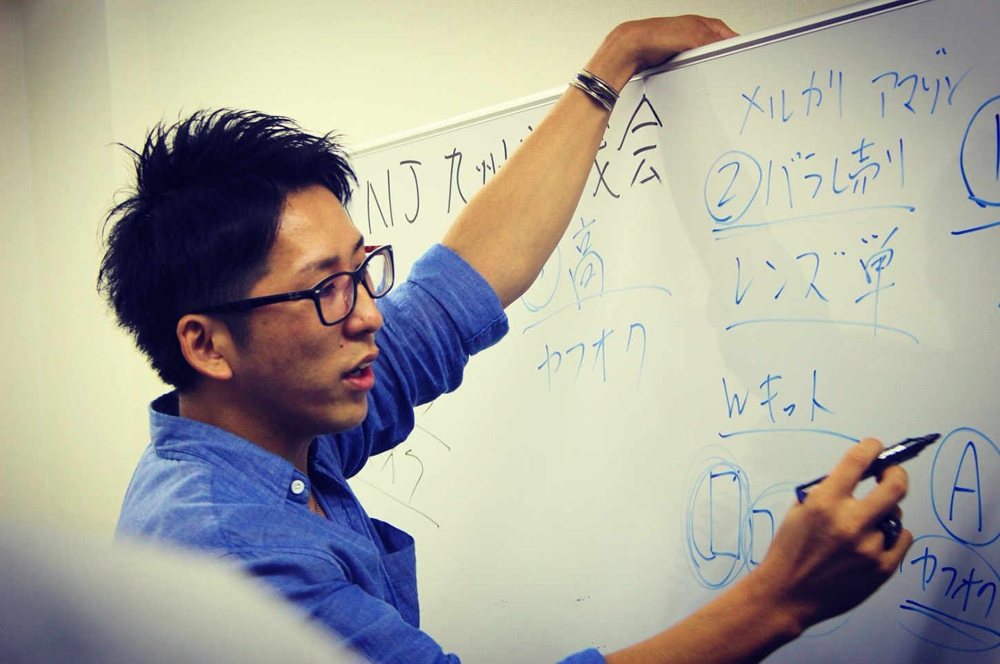
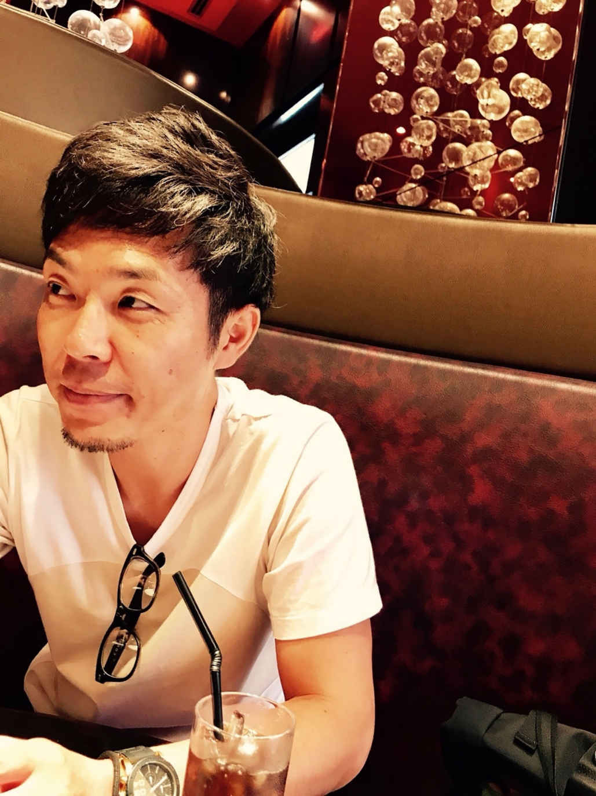

| １冊目に読みたい脱サラの教科書 〜劇的に人生を変えた５人のストーリー〜 | |
| five experience | |
| Hitotsuku Publication (2018) | |
five experience
【梶前】はじめまして。本書を手に取っていただき、誠にありがとうございます！ この本は、タイトルにもある「脱サラ」をテーマに、僕、小泉さん、近山さん、前川さん、森さんの５人が、それぞれの人生ストーリーをざっくばらんに対談しています！
【小泉】本書を手に取っていただき、誠にありがとうございます！ そうですね。脱サラするまでの経歴であったり、脱サラの動機、脱サラした後の生活までかなりたくさんお話しています！
【梶前】ひとりひとり境遇が違うからこそ、一冊にすごく思いが詰まっていますよね。
【小泉】そうですね。この本を読まれているあなたにも、「境遇は違っても、どこかに共感していただける部分が絶対ある！」と僕は信じていますからね。
【梶前】僕たちは、読んでいただいているあなたが、「過去の自分」なんだという思いで、今回話をさせていただいています。過去の自分に今の自分から伝えていくように、あなたにも僕たちの言葉を受け取ってもらえたら、とささやかに思っています。
【小泉】以前の僕たちと同じように悩んでいるあなたに、ぜひ希望を持っていただきたいですね！ そして僕たちのことも知ってもらうことで、あなたの行動の背中を押せるようなきっかけになれたら嬉しいです。
【梶前】そうですね。この本を読んでいただいているあなたの悩みを、少しでも解決する力になれたら幸いです！ よろしくお願いいたします。
【小泉】よろしくお願いいたします！

（写真：森 貞仁）
【梶前】さて、ここからスタートしていくのですが、読んでいただいているあなたに、「誰だ、この人たち？」とまず思われていることでしょう（笑）。ですので、最初に自己紹介をさせていただきます！
【小泉】そうですね（笑）。梶前さんからお願いします！
【梶前】僕は梶前のりひろと申します！ 年齢は38
歳で、現在福岡県で奥さんと子供２人の４人家族で暮らしています。もともとは、建築関係の会社で営業の仕事を11
年間していました。しかし、一昨年の11
月に脱サラをして、今はネット物販ビジネス講師、インターネットを使った投資・物販・福岡の不動産投資の代理店や、副業・脱サラのコンサルティングの仕事をしています。脱サラをしてから今までで、おおよそ年収１０００万円ペースで稼いでいます！
【小泉】僕は小泉拓也と申します！ 年齢は29
歳で、現在大阪府で奥さんと子供２人の４人で住んでいます。前職はＩＴ関係の仕事をしていました。今は、物販ビジネスの講師として、コンサルティングを行っています。僕も梶前さんと同じように、年収１０００万円を超えるくらいのペースで稼いでいますかね。自分としてはまだまだの状態ですので、これからどんどん伸ばしていけたらなと思っています！
【梶前】こんな感じの２人です（笑）。２人の共通点としては、家庭持ちで子供もいて、会社員をしていたけど脱サラしたというところですかね。
【小泉】そうですね。家族持ちで独立なんて考えられない！
と思われるかもしれませんね（笑）。
【梶前】むしろそう思う人の方が多いでしょう（笑）。根本的なことからですが、なぜビジネスをしようと思ったのか？
をお話していきましょうか！
【小泉】そうですね！ 梶前さんはどんな感じだったんですか？
【梶前】僕自身は、先ほどもお話したように11
年間会社員をしていました。当時はある程度安定した生活は送れていたんですが、上の役職に就けても給料が上がらないという状態になってしまっていたんですよね......。役職には就いたけど、責任だけ大きくなる、１年間働いても給料が２０００円しか変わらない、という感じはけっこう会社員あるあるみたいですが（笑）。
【小泉】やばいですね。でもこういうことって、会社員時代によく僕も耳にしていました。
【梶前】だから僕は、これを一生続けるのが嫌だった、ということがまずはありました。またそれに加えて、老後に年金がもらえない、税金は上がるという将来的な不安もありましたし。
【小泉】先のことを考えるとこれじゃ......ってなりますよね。
【梶前】あと、子供の教育費もかかってくるという不安も、自分のなかでは大きかったです。実際に子供が幼稚園に入園して分かったんですが、月に３万円くらいお金がかかるんですよね......。僕は子供が２人いるので、月に約６万円が必要でした。
【小泉】月に６万円は痛いですね......。
【梶前】正直かなり痛いです（笑）。そんな状況なので、当然節約しながらの生活をしていましたね。でも切り詰めた日常が災いして、お金に関することで奥さんとのけんかも多くなってしまいました......。例えば、会社で飲み会があったときには、「またお金を使うのか！」といろいろ言われていましたし、もらったお小遣い１万円を全部使ってしまうと、奥さんからめちゃくちゃ怒られていました。
【小泉】あー、分かります（笑）。お金にシビアになるんですよね。
【梶前】仮に３０００円を残して帰っても、「飲み会が３０００円くらいで、その後カラオケに行っても２０００円くらいだとしても、５０００円くらいで収まるはずなのに２０００円はどこにいったの？」と、細かいところまですごく追求されていましたし......。そしてその都度僕も「その２０００円には交通費もあったり、後輩に缶コーヒーをおごったりもあるんだ」と、細かい説明をしていました。ちなみに大きい声では言えませんが、そういう嘘の設定をして、自分の小遣いにピンハネしていたことがありましたが（笑）。
【小泉】なるほどなるほど（笑）。でもこれは、絶対みんなやってると思いますけどね。
【梶前】そうですよね。だいたい同僚もみんなこんな感じだったので。あと僕は、ごはんのときに悩む時間も嫌でした。朝ごはんにパンを買っていたのですが、１００円にしようか１２０円にしようかと、いつも悩んで買い物をしていましたから。昼も昼で、ワンコインランチをどうにか節約できないかとすごく悩んでいました。
【小泉】これもめっちゃ分かります！
【梶前】そうですか（笑）。もちろん家族を養うために、我慢すべきことではあったんですが、こういう細かいお金で悩むことが、本当に嫌で嫌で仕方がありませんでした。頑張って節約しても、家族旅行も、外食も、ショッピングも、どれも満足にできる余裕はなかったですからね......。だから僕は、節約は無理だからもっと稼ぐ方向
に意識をシフトしていかなければいけない、と考えるようになったんです。
【小泉】そこが大きいな、と僕は思いますけどね。たぶん世のお父さんたちは、お金の作り方を見出せずに節約する、という方向に意識が傾いてるパターンが多いでしょうし。でもその考え方だと何も変わらないんですよね......。変えるためには、稼ぐ方へ意識をシフトしていくことが重要ですから。
【梶前】僕もホントそう思います！ 小泉さんは何かきっかけはあったんですか？
【小泉】僕も、梶前さんのようにもともとは会社員で、給料も爆発的に上がるなんてことはなく、ちょこちょこっと増えていくような感じで日々を過ごしていました。業種で言うとＩＴなので、「技術勝負」みたいなところがけっこうあり、高卒だった僕にはかなり仕事は大変でした......。
【梶前】なるほど。ＩＴは知識がないと大変ですよね......。
【小泉】はい。でもそんな自分に対して、会社の人は結構期待をしてくれていたので、応えようと毎日頑張っていました。でもやはり限界はあって、仕事が全然追いつかない、追いつかないから当然給料も上がらないという状況になってしまっていたんです......。こんな状況で、結婚して子供が２人できたので、仕事を辞めるわけにもいかず、安い給料でどんどん生活は苦しくなっていきましたね。
【梶前】うーん。家族がいるとやっぱりお金の面で苦労はしますからね。
【小泉】子供がいることはもちろん幸せなんですけど、お金がないから幸せじゃない、みたいな部分は確実にありました。「最初の頃は、妻と子供とよく出かけてたなあ」と、思い出しながらも、「今はそんな余裕全然ない」と、家族サービスも全くできていませんでした......。外にいるときも、「ご飯をどれだけ安く済ませられるか」「上司を捕まえてご飯ご馳走してもらおうかな」など、何とかしてお金を使わないようにすることばかり考えていましたし（笑）。
【梶前】こういうことって絶対考えてしまいますよね（笑）。すごく分かります！
【小泉】でもそんな毎日を続けていると、自分のなかで、これって絶対違うよな
と感じるようになったんですよね。このままでも幸せになれるのかもしれないけど、家族で旅行やご飯を食べに行ったり、子供を学校に通わせてあげたいという「僕が思い描いている幸せ」にはなれないな、と思ったんです。特に子供に対しては、勉強して夢を追いかけてほしい！
という気持ちがとても強かったので。だから、生活を変えなければ！
と考えるようになっていきました。
【梶前】そうですよね。やっぱり僕たちは、根本的には子供のためとか奥さんのためという家族のために頑張る
っていう気持ちが一番強いですから。
【小泉】確かにそうですね。自分ひとりだったら絶対、「人生どうでもいいや」ってなってしまいそうですからね（笑）。
【梶前】僕もそんな人間です（笑）。
【梶前】「家族のために頑張る」という気持ちがあるなかで、まず何から始めたのか？
ですね。僕は、まずは副業から始めていきましたが、小泉さんも確かそうでしたよね？
【小泉】はい！ 僕も副業からがスタートでした！
【梶前】まあ普通の会社員が、いきなり脱サラしてビジネスを始める、ということは相当ハードルが高いことだと思いますし、まして家族もいましたからね。さすがにそれはできなかったので、仕事しながら何かできるものはないか？
と、僕はまずはＹｏｕＴｕｂｅを観て探していきました。そして情報を集めているうちに、「やはり在宅でできるネットを使ってやれるビジネスかな」という考えに至りました。
【小泉】そうですよね。働きながらでもできることは限られてきますし。
【梶前】そしてそこで見つけたのが、今もやっているネット物販ビジネス
でした。動画を観て、「自分にもできそうだ！」と感じたので早速実践してみると、なんと３ヶ月くらいで月１万５０００円から２万円くらい稼げるようになったんです！
【小泉】うわー、すごいですね！
【梶前】自分でも、最初はとても嬉しかったです！ ただ、使った時間で言えば、１日４時間とかだったので、時給で換算するとめちゃくちゃ低かったんですよね......。「このままでは厳しい、だけど稼げることは分かったからこれを辞めるわけにはいかない」と思い悩みましたが、最終的には、ちゃんとネット物販ビジネスを人から学ぼう！
という気持ちに固めることできました。
【小泉】やっぱり人から教わることが重要ですからね。
【梶前】ホントそれです！ 自分ひとりでやっていると、「この商品出しても大丈夫かな......」「お客さんからのコメントの返し方が分からない......」などと、つまづくことがすごく多かったので。だから僕は、35
万円の自己投資をして、インターネットビジネスのスクールに入ることにしました。
【小泉】35
万円を払うってなったとき、奥さんは大丈夫だったんですか？
【梶前】「35
万円を使う」と言ったら、嫁さんに確実に反対されると思ったんで、僕は払ってから嫁さんに言いました（笑）。でもこの学ぶことを始めたというところが、自分にとっての本当のスタートだったのかな、と今は思いますから、これでよかったです。
【小泉】なるほど。でも僕もそんな感じでしたね。最初は、副業をやるためにネットや動画を観て、「どうしようかなあ」といろいろ考えていました。そうして情報を集めていくなかで、「どうやらネット物販ビジネスが初心者でもできて、一番手堅そうかな」と感じるようになっていきました。
【梶前】ええ。最初は一緒ですよね。
【小泉】そのときに僕は、もう独学でやらずに、そのままインターネットビジネスのスクールに入ることを決めました。僕も梶前さんと同じように、嫁さんには相談せずに、35
万円払ってから事後報告しました（笑）。当然、事後報告したときは嫁さんと大ゲンカになってしまいましたが......。
【梶前】反対されるのは十中八九分かってますし、なかなか言えないですよね（笑）。
【小泉】はい（笑）。でもスクールに入ってからは、初月で８万円も稼げて、「これは稼げる！」とより実感をすることができましたから。僕もスクールに入ったことが何より大きかったなと、今は思えますね。
【梶前】小泉さんもそう思いますよね。今だから感じますが、家族に言うタイミングはホントに重要だったなと思います。
【小泉】「35
万円払ってビジネスを学んでくる」って言って、「うん、良いよ、行ってきな」って送り出してくれる人はまあいないですからね。いたら逆に怖いくらいですし（笑）。誰だって、最初は賛成してくれることなんて無いでしょう。
【梶前】よく「まず奥さんとかに相談しないと」って言う人もいますが、僕からしたら、それって逃げてるよな、と思いますね。反対をされにいってるようなものですし、奥さんに相談しないと、と言っているうちは、ただ言い訳しているだけの時間ですから。本当に家族のことを考えて行動するのなら、お金を払った後に言って、反対される方が断然良いです！
【小泉】間違いないですね！ 35
万円払って自己投資をして、年収１０００万円を目指せる世界に行けるなら、それだけで大きな価値ですから。でもそこの環境に入らなければ、１０００万円は稼げないですし、できなければ今のままなんですよね......。まあ「今のままでも良いです」と言うのであれば問題は無いですが、生活を変えたいから、ビジネスや自己投資の重要さを調べてるんじゃないですか？
という根本を考えてみてほしいです。
【梶前】そうですよね。そういう人は、自分の行動と態度が一致してないですからね。
【小泉】それだけ家族のために行動しているのに、家族の反対の一言だけで行動を止めてしまうのは本当にもったいない、と僕は思いますね。やらないことを家族のせいにせず、「家族のためにやる！」という行動の動機に僕はしましたし、読んでいただいているあなたにもそうしてほしいです！
【梶前】今までと同じ生活をしていても何も変わらないですし、そうでもしないと人間は変われないですからね。要するに決断の順番を変えることが、まずはスタートになるんでしょうね。結局は、気持ちの部分が何より大きいですから。
【梶前】そうやって自己投資をして、ビジネススクールに入ったんですが、ビジネススクールってあまりイメージが湧きにくいところだと思います。僕と小泉さんは同じビジネススクールに入ったのですが、世の中にはこの手のものはたくさんありますからね。
【小泉】そうですね。僕も最初は「怪しくないかこれ」という不安が正直ありましたし。
【梶前】僕は、ネット物販ビジネスの動画をＹｏｕＴｕｂｅで探していたとき、ビジネス界では有名なＫさん
の動画を観たことが、まずきっかけとしてありました。スクールに入る前に、Ｋさんが言っていたことがある程度理解できて、ビジネススクールの重要さも分かっていましたので。ただ、それでも１００％
信じては入れなかったですね。
【小泉】言ってることは分かっていても、それだけでは完全に信用しきれないものですからね。
【梶前】読んでいただいているあなたにもお伝えしたいのは、インターネットビジネスのスクールで、最初から〝１００％
〟信用して入れるところはまずない！
ということですね。「これいけるんじゃない？」と感じられたら、そこに思い切って入ってみるしかないと思います。
【小泉】まあこれって、どこでも一緒ですよね。例えば、就職をするときも、「うちの会社はホワイト企業です！」なんて募集では書かれていても、「入ってみたら実はブラック企業でした......」とかってよくあるじゃないですか。外から見えるものと、入ってから見えるものはぜんぜん違うと思いますし、入らないと「ここはどうなのか？」は絶対分からないですからね。
【梶前】ホントその通りです！
【小泉】疑ったところで何も変わらないですし、一歩を踏み出してみてそこでどうだったかを考えないといけないと思いますね。だめだったら次へいけばいいですし、成功したらＯＫじゃないですか。不安や恐怖はただのネガティブな考えで、自分の足を止めてしまうので、どれだけ捨てきれるか、そしてまずは一歩踏み出すようにしていけるかが大事だと思いますね。
【梶前】そうですよね。だからと言って「何でもかんでも挑戦していけ！」というわけでは、もちろんありませんけど。ある程度中身が見えているものをしっかり選ぶことが、結局大事なんです。例えば、よくスマホで見る『１日５分の作業で、月収１００万円』みたいなやつは、ホントに入ってみないと何で稼いでいるのかが分からないじゃないですか。ずっと稼げると言っても、どうやって稼げるのかが全く見えていないと分からないですし。
【小泉】そうですね。ある程度のノウハウが見えているものが大事ですよね。
【梶前】はい。僕が見ていた物販動画では、どこで仕入れてどこで売るかが全部見えていたんです。そして、それをやったら僕自身も稼げた、というところにもつなげられましたし。だから、「何でお金を稼げているのか？」がちゃんと見えているところは、比較的安心していいのかなと思いますね。
【小泉】ノウハウのところでは、これ稼げそうだな
という感覚を、ある程度持っておくぐらいがいいですよね。付け加えるなら、講師の人がどんな人か？
みたいな中にいる人も結構重要になってくるんじゃないかなと思います。「その人に付いて行ったらどうなるかなあ」と考えられることも大きいですし。
【梶前】僕と小泉さんが入ったスクールは、全部見えていますからね。ノウハウから中の人まで（笑）。
【小泉】そうですね（笑）。そんなに全部見えていても、入るときの信頼度は１００％
なかったですけどね。
【梶前】だから、少しの不安だけで行動を辞めてしまうのは本当にもったいないと思います。
【梶前】入った物販のスクールで学んだことは、正直ホントに単純なことだけでしたよね。一言で言ってしまえば、安く仕入れて高く売る
ということを実践しただけですし。もちろん商品のリサーチや売り方などの〝ノウハウ〟を学ぶところもありますが。動画があってその通りにするだけなので、難しいことは何もありませんでした。
【小泉】そうですね。やるべきことは本当に簡単ですよね。
【梶前】それで最終的には結果を出すには、結果を出している人の真似をする
ということに尽きましたね。「むしろこれだけやればいい」と言っても過言ではないと僕は思います。特別な知識やスキルが必要ということは、全くありませんでしたから。
【小泉】インターネットビジネスと言うからには、「ＩＴの知識を持ってる方がいいんじゃないか？」と思われる人が多いんですが、全然必要ないですよね。
【梶前】むしろあった方が邪魔なくらいですよ（笑）。
【小泉】そうですね（笑）。僕も知識があったんですが、逆に考えすぎて邪魔してましたから。知識がない方が、全部素直に吸収できるんでやりやすいと思います。実際、タイピングができない方で、ものすごい実績を出して、講師になってる方もいますから。
【梶前】人差し指でキーボード打ってたらしいですからね、その人（笑）。そんな人でも結果を出せるんですから、ネット物販ビジネスってやっぱりすごいです。
【小泉】素直にやり方通りにできる人が稼げる
ということですね。
【梶前】それはすごく分かります！ 僕も今講師をしていて、全国で１３００人もの人を見てきましたが、結果を出せない人ってやっぱりいるんです。でもその人たちの話を聞いて原因を探ると、その原因は２つだけしかないんですよね。
【小泉】へー、２つだけなんですか。それって何なんですか？
【梶前】そもそもやっていない
か方法が間違っている
かなんですよ。要するに、結果が出せない人は、やることをやっていなかったり、自己流のノウハウで全然違うことをやっているという人なんです。
【小泉】そうですねー。言われてみると、それは僕も感じてました。
【梶前】結局物販は、安く仕入れて高く売る
ということをするので、それをどこの媒体でやるかで変わるだけなんです。だから〝再現性〟はものすごく高いんですよね。正直そこの部分を、本当に真似するだけで十分なんです。
【小泉】確かに、この２つだけをちゃんと守れば、誰でもできて結果は出ますし、僕たちもこれをやってきただけですからね。別に特別なことや独自のことをしてきたわけでもありませんし。スクールだとサポートしてもらえて、自分の方向性を修正してもらえるんで、そこも強みですよね。
【梶前】そうですね。できていないところや間違いを正してもらえるのは良いところですね。
【小泉】「ここ間違ってますよ」とアドバイスをしてもらいながらやるのは、ひとりだと絶対に不可能ですし、間違ったまま突き進んでしまうとそれが失敗にもつながりますし......。単純なことなんですけど、スクールとか環境の整っているところに入らないと、なかなか難しいことになるのかなと思いますね。
【梶前】やっぱり僕自身は、家族がいたから行動できた、というところが非常に大きくありました。「奥さんと子供がいるから行動できない」と考えてしまう人が多いとは思いますが、僕は逆に家族がいるから行動しないといけない
と考えました。そしてビジネスを通して、子供に夢を追いかけることの素晴らしさや、会社員以外のお金の稼ぎ方を教えてあげられたらいいな、と思いますね。
【小泉】家族を行動するきっかけにしていけたんですね。
【梶前】僕も小泉さんももちろん、多くの人は就職して会社員で働くことしか分からなかったじゃないですか。その選択肢だけで夢を諦めるのは残念ですし、自分の子供には、そんなことをしてほしくないので。自分の身を持って、体現していけたらと、現在もやっています。
【小泉】そうですよね。子供のためだったら、なおさらやっていけますよね。
【梶前】何のとりえもない僕たちでも、思いと行動を変えれば未来を変えることは本当にできるんだ、
ということを伝えていきたいですね。
【小泉】僕もそう思いますね。僕たちみたいに家族を持っている人に「奥さんや子供は好きですか？」と聞いたら、もちろん「好きだ」と答えますし、「幸せにしたいですか？」と聞いたら、もちろん「幸せにしたい」と答えるでしょう。でも「今のままで幸せにできますか？」と聞いたら、そこで答えられない人は、たくさんいるんじゃないかと思います。
読んでいただいているあなたも、きっとそういった面があるんじゃないでしょうか。だから、そんなあなたでも、ビジネスをやればしっかり稼げるようになれて大丈夫なんだ、
と後押ししたいですね。
【梶前】そうですね。そこはすごく伝えていきたいです。
【小泉】僕自身も、子供のころ「あの学校へ行きたい」「あそこで学びたい」という夢があったので、自分と同じように夢を持っている人を、サポートできるようになりたい、という思いがあります。僕は、家庭の事情もあって夢を断念せざるを得なくなってしまいましたが、自分の子供にはそうなってほしくない、
と強く思っています。かっこいいパパ
として、子供にも見てもらいたいですし、あなたも家族のためにビジネスや副業を始める一歩を踏み出して、家族を幸せにしていって欲しいですね。
【梶前】読んでいただいているあなたも、自分を変えたかったり、将来の不安を抱えて悩んでいることがたくさんあると思います。僕も昔はそんな状態だったので、はじめにも言いましたが、僕はあなたが「過去の自分なんだ」と思えています。だから、本書を通して僕は、過去の自分に「大丈夫だよ、あのときの決断は間違っていなかったよ」と伝えるように、あなたにも受け取っていただけたらと思います。
【小泉】僕たちはこの道に足を踏み入れていますが、あなたはまだ踏み入れようかどうしようかと悩んでいるところだと思います。その時代は僕たちもあったので、「大丈夫だよ」と伝えていきたいですね。
【梶前】僕は過去の自分に、「よくやった！」と、言ってあげたいくらいですから（笑）。
【小泉】僕もそうですね。もしこの道を選んでいなかったら、今頃はまだ会社員で、ずっと苦しんでいたでしょうし、何も変えられてなかったと思いますから。下手したら、何もできない自分に精神的に参ってしまっていたかもしれないです......。
【梶前】そこでうつ病とかになる方が最悪ですからね。
【小泉】もうそうなると、どうにもならなくなってしまいますからね......。そうなる前にせめて一歩踏み出して、頑張ってみて、幸せな未来を掴み取ってほしいです。
僕たちは絶対にそのサポートはさせていただくので。
【梶前】そうですね！ そこは強く伝えたいです！ さて、以上が僕と小泉さんのお話でした。僕たちは家族がいたからという話でしたが、第２章では、結婚していないけど自分を変えたくて行動し、脱サラした２人がお話をしていきます。
【小泉】この次からも、いろんな毛色の違う方々の話が出てきますが、どの人も強い意志や気持ちで突き進んでいった結果、幸せな生活を手に入れた方々なので、第２章も読み進めてみてください！ 僕たちの話を最後まで読んでいただき、ありがとうございました！
【梶前】そうそう！ この電子書籍出版記念でＬＩＮＥ＠
にご登録して頂くと、スペシャル特典をプレゼントしますので、ぜひ登録して下さい！
ありがとうございました！
（写真：近山 勇樹）
【近山】では、ここから第２章に入っていきます！ よろしくお願いいたします！
【前川】よろしくお願いいたします！ まずは僕たちの自己紹介から始めましょうか。僕は前川明範と申します。岡山県在住の33
歳で、血液型はＯ型の蠍座です！ 最終学歴は中卒です。
【近山】僕は近山勇樹と申します。奈良県在住の30
歳で、血液型はＡ型の牡牛座です！ 僕も前川さんと同じで最終学歴は中卒ですね。
【前川】読んでいただいているあなたには「え！ 中卒なの！？」と驚かれるかもしれませんね。だから「何で中卒なのか？」も踏まえて、まずは僕たちのことを知っていただきましょう（笑）。
【近山】そうですね（笑）。その方が親近感も湧いていただけるかなと思いますし。
【前川】ええ。まず僕なのですが、もともと僕は、兵庫県で家族と住んでいました。でも幼少時代は両親があまり仲良くなく、小学３年生のとき両親が離婚をすることになったんです。それからは、母と３つ上の兄の３人で生活をしてきました。生活状況は変わりましたがその後は、小学校も卒業して中学校に進学してという一般的な生活をしていました。
【近山】母子家庭で育ったんですね。
【前川】はい。当時母親は、朝から晩まで僕たちのために働いていて、その姿をずっと見ていました。だから、自分も何かしないと
、と子供ながらにだんだん思うようになっていったんですよね。正直こういう状況だと男は、ヤンキーになるか、母親のために何かしようとなるかのどっちかなんですが、僕は後者でしたね（笑）。
【近山】なるほど（笑）。優しいですね。
【前川】いえいえ。僕がいることで家計を圧迫していたのは感じていましたので。なかなかすぐにはお金を稼ぐことはできないものですが、「それでもできることは何かないかな」と、ずっと考えていました。そして、「すぐにできることは、自分の分の生活費を浮かせるために家から出ることだ」という結論に至ったんです。
【近山】えー、すごい決断ですね。
【前川】だから僕は、中学校を卒業したら働いて、高校には進学しない！
と、決めていました。でも母親と先生から「高校には行っとけ」と、めちゃくちゃ言われたので、数ヶ月間だけ定時制高校に在学することになったんです。ちなみに名前書いたら受かります、レベルの学校でしたが（笑）。
【近山】それ分かります（笑）。やっぱり「高校は行け」って周りにいる人みんなから絶対言われますよね。
【前川】ええ。そしてまた、入った高校がもうマンガのようなヤンキー高校で（笑）。ギャルや特攻服を着た生徒がいるようなところだったんですよね。勉強も先生と生徒のケンカばかりで全然進まない状況で。そんなところに数ヶ月だけいたんですが、「やっぱり働きたい！」という気持ちが消えずにいたので、母親に言わずに退学届を出して、学校を辞めて家を出ました。
【近山】もともと通う気もなかったですし、そうなりますよね......。
【前川】そうですね。学校を辞めてからは、親戚の家があった岡山県へ行くことを考えていました。当時16
歳ということもあり、親戚の家に居候しながら働くことを許してもらえていたので。結局最後まで母親には言えず、岡山にも黙って行ったんですが......。
【近山】それはそれは、お母さんはすごく驚かれたでしょうね。いつくらいから黙って出て行こうと考えていたんですか？
【前川】居候できるかどうかは全然分からなかったんですが、何かやって働かないと
と中学校を卒業したときから変わらず、ずーっと考えていました。親戚ともちょこちょこ連絡を取って、お世話になっていたので、岡山での目処が立ってからはもう黙って行動しようと決めてました。
【近山】へー、じゃあ家が息苦しいとかはなかったんですか？
【前川】それは全くですよ（笑）。もちろん思春期だったんで、そんなに母親と話をすることはなかったのですが、心の中ではお互い心配してるみたいな感じでしたね。
【近山】なるほど。そんな親子関係だったんですね。
【前川】近山さんはどんな家庭環境だったんですか？
【近山】僕は、両親と姉２人の５人家族でした。幼少の頃から２階建ての１軒家に住んでいて、犬も飼っていてと結構いい生活をしていました。しかし小学校に入学する前に、２ＤＫのマンションに引っ越しすることになったんですよね。５人で２ＤＫだったんで、生活がすごく変わったなと当時は子供ながらに感じていました......。
【前川】確かに変わり方がすごいですね。何かがあったんですか？
【近山】これは後々分かったんですが、当時両親が〝ネットワークビジネス〟を始めたんです。僕も詳しくは知りませんでしたが、両親がビジネスにお金を注ぎ込んで、サプリメントや石鹸などがいろいろ届くという状態になっていました。その結果どんどんお金がなくなっていったんです。
【前川】うーん、こんなこと子供だとよく分からないですからね。
【近山】でもこれがうまくいかなかったみたいで、父親はギャンブルに走って、母親は他の男と不倫をして、となってしまったんです......。結局は僕が中学２年生のときに、両親は離婚して家族はバラバラになるという末路になりました。
【前川】なるほど。これはかなりきついですね......。
【近山】はい......。その後、姉２人は父親のところ、僕は母親のところで生活をすることになりました。母親は離婚した後も不倫相手と一緒に住んでいたんですが、僕は生活環境の変化についていけなくなって、不登校になってしまったんですよね......。勉強は嫌いではなかったんですが、生活が変わって周りより成績が悪くなっていって、その上不登校にもなって、正直学校の授業には全然付いていけませんでした。その結果、内申点も低くなり、僕は県内ワースト３の高校だけしか選べなくなってしまいました。
【前川】高校進学だと、中学校の成績も関わってきますからね。
【近山】偏差値はそんなに気にはしていませんでしたが、学ぶ環境も良くなさそうですし、高校を出た姉たちが、奨学金などのお金に苦労をしていたのもあって、そんな高校に行くくらいなら働いた方がいい
、と僕は感じるようになっていました。家も貧乏でしたし、最終的には、高校には行かない、の一択しかありませんでした。それで中学校を卒業してすぐバイトし始めたという感じですね。
【前川】なるほど。けっこう壮絶な人生ですね。
【近山】読んでいただいているあなたも、もしかしたら学歴にコンプレックスを感じている
かもしれません。日本は学歴社会ですし、低学歴だと当然就職に困りますからね。前川さんは思われてきたかもしれませんが、正直どうやってもそこは気になりますよね。
【前川】そうですね......。それはめちゃくちゃありました。
【近山】先ほどもあったように、僕は中学校を卒業してから高校へは行かず、そのままバイトをすることにしました。前川さんは、高校を辞めて岡山へ行ってからはどんな感じだったんですか？
【前川】当時の僕は、16
歳の頭も技術も何もない人間でした。岡山でも親戚以外にコネは一切なかったので、「ホントにどうしよう......」という状態でしたね。でもありがたいことに、親戚のつてで、トラクターを作る工場で働けることになったんです。最初は暮らしていくためのお金を貯めなければいけなかったので、そこでは朝４時起きで夜10
時まで仕事する生活をずっとしていました。休みの日も知り合いがいないので、家の手伝いなどをして全く遊んでいませんでしたね。そんな生活がまず１年くらいありました。
【近山】うわー、大変ですね。１年はキツイ生活ですよね......。
【前川】ストレスも多かったですね。でも仕方のないことですから。ですが、そんな生活を続けて、お金を使わなかったおかげで、１３０万円くらいを貯めることができました。生活資金もできて、知り合いのつてで住むところも見つけられたので、その次の年からは、念願の一人暮らしをスタートさせることができたんですよね。
【近山】なるほど。一人暮らしできたのは良かったですね。
【前川】そうですね。そうして一人暮らしを始めて、１年間はまだ工場で働いていましたが、その後自分のなかで「やりたいことをやろう！」
という気持ちが芽生えてきました。そして、当時僕は服が好きだったので、ファッションビルに入っていたお店でアパレルの仕事をやることにしました。
【近山】そうなんですね。これまた大きく業種が変わりましたね（笑）。
【前川】ええ（笑）。働くことになったお店も、店員さんと少しずつ話すようになって、仲良くなったから働けた、という感じでしたし。でも、そうやって入ったお店でしたが、人間関係で大きな揉め事を起こしてしまい、１年くらいでクビになってしまったんですよね......。
【近山】うーん、やっぱり人間関係は難しいですからね......。
【前川】その後はニートになって、「これからどうしようかな」と何もできていませんでした......。そんなときに、アパレルのお店と同じテナントに入っていたお店の人と偶然会って、その人の紹介で、募集していた別のアパレルのお店で働けることになったんです。それから22
歳のときには、そこで店長になることができ、30
歳まで働くことになりました。
【近山】良かったですね！ またアパレルの仕事ができて、その上店長にもなれましたし。
【前川】そこは本当に良かったです。でもアパレルなんでそんなに給料が良いわけではありませんでした。最初は、月13
万円くらいで、10
年働いても月20
万円ないくらいまでしかもらえませんでしたから。好きな仕事はできても、お金がなかったことはホント厳しかったです。
【近山】確かに、一人暮らしでこれだけのお金じゃ大変ですよね......。
【前川】はい。実際電気とガスが止まったときは、本当に死ぬかと思いましたからね......。そんな状況もありながら仕事をしていたのですが、30
歳のときにお店が入っていたファッションビルが閉店してしまったんです。お店の建物自体がなくなる、というどうしようもない形で、仕事を失うことになってしまい、僕は再びニートになってしまいました。
【近山】どうしようもできずに無職になるのは、また違った苦しさがありますよね......。
【前川】無職になるのが一度だけではありませんでしたからね。近山さんは、バイトはどんな感じだったんですか？
【近山】僕は16
歳で、飲食店やホームセンターのバイトを始めていきました。当時ギターをやっていて、音楽系の専門学校へ行こうか、と思っていたのもあり、バイトはけっこう頑張れていました。でも、みっちり働いても月15
万円くらいしか入ってきてなかったです。実家でしたが食費も光熱費も自分で出していたので、全然お金が貯まりませんでしたね。
【前川】へー、ギターをやっていたんですね。生活費も自分でだと、なかなか貯金まで手が回らないですよね。
【近山】はい。もちろん就職なども考えて、ハローワークとかに行って探していましたが、中卒なので良い給料のところなんて全くありませんでしたね。結局就職するよりもバイトの方の給料が良かったので、20
歳までバイトする生活になっていました。
【前川】中卒だとバイトの方が稼げるってことが多いですからね。
【近山】あとプライベートの方でも、20
歳のときに付き合っていた彼女がいたので、同棲しようという話になっていました。でも当時の僕は、お金に対する意識も全くなかったので、同棲するということが全然分かっていませんでした......。そんな状態で、いざ同棲することになると、敷金、礼金などで貯金の30
万円が飛び、お互いお金がなかったので、もう貧乏な生活しかしてませんでしたね。
【前川】うーん、住む部屋をどうにかするだけでも結構まとまったお金が必要ですもんね。それに加えて生活費もとなると......。
【近山】はい......。僕は当時の彼女と結婚することまで考えていたので、いろいろと大変でしたね。僕のなかでは「結婚するならちゃんとしたところに就職しないと」という考え方があったのですが、いい就職先もなかったですし......。思い悩んだ挙句、いいところに就職するために大学に行こうと高卒認定の資格を取るまでしましたから（笑）。
【前川】へー、結構いろんなことをやっていったんですね。
【近山】でもその分お金がかなり飛んでいきましたから......。高卒認定を取るために通った塾費用が40
万円くらいありましたし、車も買っていたので１２０万円が必要で......。結局お金がなくなり、同棲も解消することになって、彼女とも別れることになってしまいました。
【前川】そうなんですね。お金もなくて彼女とも別れて、辛いところですね......。
【近山】でもこのことをきっかけに僕は、〝お金〟というものをしっかり考えるようになりました。今まではなんだかんだ成り行きで過ごしてきましたが、中卒ながらにも収入を得られることをしなければいけない
、と思うようになったんですよね。この先何十年もある自分の人生に向き合っていかないといけない、とすごく葛藤をしました。
【前川】でも、20
代でお金のことを考えられるのは、すごいことだと思いますね。
【近山】いえいえ（笑）。当時はそんな状態でしたが、自分のなかでひとつ転機になることがありました。それが姉の離婚だったんですけど、離婚したことで甥っ子や姪っ子が母子家庭という環境になってしまったんですよね......。
【前川】お姉さんも母子家庭になってしまったんですね。
【近山】はい。それで姉が地元に戻ってくることになり、甥っ子や姪っ子と関わることが増えて、すごく愛着が湧くようになったんです。僕が高校に行かなかった理由も家庭環境が大きくあったので、過去の自分と重ねて「この子達が進学するときに、満足のいく学校に入れられるのか」と思うようになっていきました。それで、「この子たちが進学できるように、お金を稼いで頑張ってみるか」と決心が付くようになったんです。
【前川】甥っ子と姪っ子のために頑張っていこうとなれたんですね。それだけ強い思いがあったんですね。
【近山】そうですね。今までは自分のことだけ考えて、バイトをしてのらりくらり生きてこられたんですけど、「この子供たちの学費を稼ぐ」と考えたら、今の生活では絶対無理だったんですよね......。仮に就職するとしても当時は26
歳でしたし、「中卒であなたは今まで何をしていたんだ？」と言われたら、ぐうの音も出ませんでしたから（笑）。失うものもないし、仕送りや学費を払えるくらい圧倒的に稼げるのであれば、「独立しよう！」
と思うようになれたんです。
【前川】なるほど。やれることが限られてくると、「もう独立するしかないな」と考えますもんね。
【近山】はい。僕も就職するということが、やっぱりありえなかったですから。給料は安いし、時間には縛られるし。周りの会社員を見てると「自分は嫌だな」とすごく感じてました。
【近山】会社で働いていると、本当に悩むことが多かったですよね。前川さんは独立の意識は、最初どんな感じだったんですか？
【前川】そうですね......。母親のために何かしようと思っていても、普通の会社に入ったら仕送りなんて全然できないじゃないですか。まして学歴もなかったんで、いい給料をもらえるわけではありませんし。だからまずは、何か自分でやるしかない
と思うようになったんですよね。
【近山】やっぱり就職したときの給料の限界は、分かってしまうものですし、そこを考えると、独立するためのいいモチベーションになりますからね。
【前川】あと僕は、店長をしていた経験と人にこき使われるのは嫌だなという気持ちが強くあったので、独立願望がすごくありましたね。どうせ僕レベルの人間じゃどこに就職しても結局は変わらないし、だったら自分で何かやろうと決心ができました。
【近山】先ほどの話のように、就職だとやっぱり学歴も見られますからね。
【前川】そこもかなり大きかったです！ それでとりあえずは、失業保険で生活をつなぎながら、パチスロをやってパチプロを目指そうとしました。最初は全然うまくいかなくて、生活費も厳しかったのですが、必死に勉強をしまくって、最終的には年４００万円くらい稼げるようになれたんですよね。
【近山】わーすごい！ めっちゃ稼げましたね！
【前川】アパレルの仕事をしていたときの給料を、普通に超えてましたからね（笑）。でもやっぱり、これって本当に自分のやりたいことなのか？
思うようになりましたし、叩かれたりもするんで精神的にはとてもしんどかったです......。そんな経緯で物販をやってみるのはどうだろう
と考えるようになりました。
【近山】なるほど。多くの人に見られることは大変ですよね......。経験や自分の気持ちをいろいろと考えて、至ったところなんでしょうかね。
【前川】はい。僕がやっていたアパレルも物販になりますし、当時いらなくなった服を自分でネットで売っていたので、「自分で仕入れてこれをやってみよう」と早速実践することにしました。最初は古着屋などで仕入れて、売ってみましたが、全然売れませんでした（笑）。
【近山】まあ初めはそんな程度ですよね（笑）。
【前川】でも数をこなしていくうちに売れる商品が分かってきて、リサーチもできるようになっていったんです。そして結果としては、月30
万円の売上で、利益20
万円くらいを出せるようになれました。
【近山】自分の力でこれだけ稼げればすごいと思いますよ！
【前川】僕もそれからは、「もっと在庫抱えて、事務所借りて、本格的に物販をやろう！」と思っていましたね。でもここで、利益が上がってくると仕事量がキツくなっていくことに気付いたんです......。「やりたいけどキツい......」そんなどうしようもない悩みを抱えていたときに僕は、ビジネス界で有名なＫさん
と出会うことになったんです。
【近山】あー、ここでＫさんにつながっていったんですね。
【前川】はい。Ｋさんの動画をＹｏｕＴｕｂｅで観て、自分は教える側になって人に動いてもらうという考え方を、僕は知ることができたんですよね。つまり、自分が悩んでいたことの回答を、Ｋさんが話していたんです。そうして「ビジネスの基礎を学ばなければ」と思い、スクールに入ってネットビジネスの世界に入っていきました。
【近山】なるほど。自分が求めていたものを得られたことがきっかけになってたんですね。
【前川】はい。僕はそんな感じでした。近山さんは独立しようとして、まずは何から始めたんですか？
【近山】僕は最初〝ＰＰＣアフィリエイト〟というネットビジネスをやりました。実業や店舗を構えるビジネスは、やっぱり初期投資でお金がかかるイメージがあったので。ＰＰＣアフィリエイトを、しっかり学べるスクールに通って、１年半くらい毎日パソコンにかじりついていました。でも悲しいことに、稼げた金額は月３０００円くらいだけでしたが......。
【前川】ネットビジネスからスタートだったんですね。でも月３０００円はちょっと少ないですよね......。
【近山】そうですね。広告費もかかって、商品を紹介する文章も考えて、ページも作る、と忙しかったので、やっぱりアフィリエイトは難しいなと感じていました。スクールの教材も高かったですし。
【前川】うーん、それはかなりきついですね......。
【近山】それで僕もどうにかしようと思っていろいろ調べていくうちに、Ｋさんと出会うことになりました。僕の場合は、動画を観て、これ稼げそうだな！
という単純な気持ちだけで入ることにしたんですが（笑）。このときはまだ考え方や捉え方といった〝マインド〟が一番大事ということを知らなかったので、自分としては衝撃的でした。
【前川】そうですね。今になってみるとそこはめっちゃ重要だと思えますからね。
【近山】アフィリエイトでうまくいかなくて、何が足りないのかと考えていたときに、僕も前川さんのように、Ｋさん
の動画で答えがはっきり分かることができたんです。そしてマインドを身に付けるためにＫさんの動画を観まくった、という感じですね。
【前川】そこがすごいところだなと思います。僕は〝ネットビジネス〟という言葉すら知りませんでしたし、自分がやっていたことがネットビジネスだとも分かりませんでしたから。マインドのことも、最初はさっぱり分かりませんでしたし（笑）。
【近山】いえいえ。最初は何をやったら良いかも分からなかったですし、それが普通だと思いますよ（笑）。
【近山】今僕たちは、コミュニティで物販講師として活動をしていますが、前川さんは講師になるまではどんな感じだったんですか？
【前川】実は僕は、Ｋさんのコミュニティに入る前に、別の物販を学べる塾に入っていたんですよね。そこは短期間だけだったのですが、いろんな人と出会えて、学べて結構楽しかったです。でもそこでは、自分が学びたかったことの途中までしか学べず、最後まで学ぶには追加料金が必要だ、ということになっていったんですよね......。「さすがにこれは無理だ......」と感じて、結局その塾は休会することになりました。
【近山】うーん、追加でお金がかかる塾って結構ありますからね......。
【前川】休会は仕方なかったですが、何かしないと変われないという危機感
は強くあったんで、クレジットカードを作ったり、母親に頭を下げるという一番やりたくなかった手段までとってお金を作ることにしました。母親に「勉強したいことがある」と初めてお願いをして、借金までしてお金を払って、僕は今のコミュニティに入ったんですよね。
【近山】うわー、これまでのことを知ってるからこそ、母親に頼ることがどれだけ苦しいことかすごくよく分かります......。
【前川】これはホントにキツかったです......。でもその分、結果を出してお金を返すということしか頭にはなかったんで、３ヶ月間は必死に勉強をしてましたね。そしていろいろ行動しているうちに、Ｋさんから「コミュニティの裏方をしてほしい」と声をかけていただいたので、運営のお手伝いをすることになったんですよ。最初は何をやったら良いのか全然分かりませんでしたが、コミュニティ生の話を聞いてアドバイスをしていくうちに、そのままサポートとして仕事をすることになったんです。
【近山】裏方から昇格したみたいな感じだったんですね。
【前川】そうですね。ちなみに物販のジャンルでは僕は、カメラ転売をやることになりました。最初は全然知識もなかったですが、ありがたいことに信頼していただけたこともあり、別のコミュニティでノウハウを学びながらやることにしていきましたね。最初は全然でも、今ではコミュニティで約１３０人の塾生にそれを教えています。
【近山】なるほど。講師になるまでにいくつもコミュニティを経験してきたんですね。僕と違って、前川さんはいろいろなコミュニティを知ってるんですね。
【前川】はい（笑）。でもどこのコミュニティでもそうでしたが、成功者の真似をするということがやっぱりベストな方法でした。
僕たちにとってはその人がＫさんだったってところで。
【近山】僕は他のコミュニティは知らないですけど、それはその通りだなと思いますね！
【近山】では、最後に生活を変えることができた僕たちからの思いを、話しましょうか！
【前川】そうしましょうか！
【近山】まずこれまでの話でも改めて感じますけど、やっぱり中卒は学歴が低くて、就職先も限られてるじゃないですか。だから僕たちみたいな人間は、めちゃくちゃ就職難だったんですよね。
【前川】そうですね。面接も最初から受かる自信がなかったんで、そもそも僕は受けもしませんでしたし。面接受けるくらいなら、そこに実際に行って、働いてる人と仲良くなって入れてもらう方が希望あるでしょ、という考えでしたからね（笑）。
【近山】僕もつてでバイトを始めることの方が多かったですね。やっぱり考えることは一緒ですね（笑）。
【前川】そうですね（笑）。それしかできませんから。
【近山】だからネットビジネスを選んだ、というところにもつながりますよね。学歴も関係ないですし、努力した分結果になって返ってきますから。
【前川】めっちゃ分かります！ そこがネットビジネスの魅力として大きいところですよね。
【近山】日本には中卒だけじゃなく、高卒とか中退とか学歴で悩んでいる人ってたくさんいると思います。僕は、勉強が嫌いでも働くことが嫌でもなかったんですが、「今の日本の仕組みの就職」というものに縁がなかっただけだ、と思っています。学歴は無くても、やる気はあったら稼ぐことはできる！ と今では信じていますから。
【前川】それは間違いないところですね。
【近山】だから僕としては、就職先でうまくいかない、やりたいことが何も見つからない、という人は、ぜひ一度、起業や独立、脱サラしてやってみるという道を、考えてみるのもいいのかな
と思いますね。
【前川】そうですね！ 僕も最初は、「独立ってどうやるんだろう？」「脱サラしてご飯を食べていくにはどうしたら良いんだろう？」と全く分からなかった人間でした。でもその原因は、自分ひとりで考えているところが大きかった、
と今は思います。ひとりで考えて分からないことなんて、考え続けても絶対に分かるはずないですし。
【近山】そうですね。そんなことをしていても出口は見えませんよね。
【前川】と、なると、それが分かっている人と一緒にいて、学ぶことが一番の近道になるんじゃないか、
と僕は思います。独立したかったら、独立してる人から話を聞けばいいですし、お金を稼ぎたかったら、稼いでいる人から話を聞けばいいんです。悩んでいる人は、自分ひとりで悩んでいる人がほとんどだと思うので、人に相談してみる一歩をぜひ踏み出してほしいです。
【近山】人に聞くということがやっぱり大事ですよね！
【前川】僕たちが伝えたいことは、それに尽きますね。
【近山】さて、以上が第２章でした。第３章では脱サラして起業した方のお話ですので、この続きもぜひ読んでみてください。第２章を最後まで読んでいただき、ありがとうございました！ ここまで読んでくださった方には、ぜひＬＩＮＥ＠
に登録していただいて、特典を受け取っていただきたいですね！
【前川】そうですね！ まずは結果の出やすい物販にチャレンジして欲しいですね！ ありがとうございました！

（写真：小泉 拓也）
【近山】さて、第３章でご紹介するのは、起業して１年５ヶ月、１期目で年商３０００万円を上げられている森貞仁さんです！
【森】森貞仁です！ よろしくお願いいたします！ １期目で年商３０００万円！
なんて聞くと、「すごいなあ」と多くの方に思われるかもしれませんが、全然そんなことないですよ（笑）。脱サラは誰でもできますし、正しい努力を続ければ、誰だってサラリーマンの給料以上は稼げるようになりますからね。
【近山】心強いお言葉ですね！
【森】サラリーマンの給料よりも多いお金を自分の力で稼いでいくことって、ひとつの会社に勤め続けるよりもはるかに簡単ですからね。そんな話をさせていただけたらと思います！
【近山】なるほど。ぜひよろしくお願いいたします！ では、早速なのですが、森さんは起業する前はどんな感じの生活をされていたんですか？
【森】僕は１年５ヶ月前までは、自分で何かやってお金を稼いだことがない年収３２０万円のごく普通のサラリーマンでした。仕事は、建築・リフォーム系の会社で営業をしていましたね。ビジネスも、何ひとつしたことがなく、知識も全くありませんでした。
【近山】へー、全くだったんですね。
【森】はい。起業や脱サラに憧れはありましたが、「何もない自分にはそんなことできない......」と思っていましたね。そんな気持ちのままサラリーマンをしていて、気付けば30
歳になってしまっていました。
【近山】うーん、最初はやっぱりそういう気持ちを抱くものですよね......。
【森】でも、自分の現状をふと考えてみたとき、「自分が昔思い描いていた30
歳と全然違うよな......」と感じるようになりました。20
代の頃は、「年収１０００万円になって、タワーマンションに住んで、外車に乗って......」といい暮らしをしている、いわゆる「できる男」になってる自分を想像していたんですよ。でも現実は、家賃３万５０００円、休みが月に１、２回、残業代も出ない、貯金もないという30
歳だったんですよね......。
【近山】理想と現実のギャップに悩まれてたんですね。
【森】はい。そんな生活をしていたときに、今の奥さんと出会ったのですが、当時は結婚するということが全く現実的ではありませんでした。だからこのときは、一度転職を考えたんですよね。でも、「募集があるということは誰かが辞めてるということでもあるよなあ」と感じて、それで人生を変えることは不可能だなという思いに、結局はなりました。そして、だったら自分で何かビジネスして稼ぐしかない！
という結論に至って、起業をしようと思ったんです。
【近山】なるほど。奥さんとの将来も考えて、辿り着いた答えだったんですね。
【森】そうですね。読んでいただいているあなたも、自分の力でお金を稼ぐ方法や副業に興味があると思うのですが、僕はそこを考えられるようになれたことが、まず自分自身ひとつ大きかったんじゃないかなと思います。
【近山】起業しようと思えても、「じゃあまずはどうしよう？」ということにはなりませんでしたか？
【森】そうですね。それが最初の大きな壁でした。自分の力で稼ぐと言っても、いろいろな稼ぎ方がありますからね。まずひとつ大きく言えば、リアルビジネスかネットビジネスか？
ですよね。リアルビジネスになると、開業資金で１０００万円以上必要とか、修行の期間が必要だとか、調べてみるといろいろ大変なことがあって厳しいんじゃないかと思いました。
【近山】ビジネスをやるにもどのフィールドでやるのか、ということですね。
【森】はい。もちろん当時勤めていた会社も、初期投資で大きなお金がかかっていたでしょうからね。どんなビジネスモデルでも、修行期間は必要だったり、すぐに起業できることの方が難しい、と自分でも重々承知はしていました。でもお金を稼ぐためにお金を払う
ということが、当時の自分には全然できなかったんですよね......。
【近山】うーん、お金は欲しいけど、稼ぐのにお金を出すのは無理、という人はけっこう多いと思います。
【森】だから、リアルビジネスは無理だな、とこのときになりました。でも稼がないと結婚もできないですし、幸せな生活を手に入れられない、と感じていたので、僕はネットビジネスを学ぶことにしていったんです。そうして調べていくと、怪しいものもいくつかありましたが、真っ当にやっている人もたくさんいて、それでちゃんと収益を上げられることを知ったんです。
【近山】まあネットビジネスは、怪しいものから真っ当なものまで、ピンキリですからね（笑）。
【森】そうですね（笑）。でも怪しいのは、実態がないものだったり、結果が出ないものが多いからだ、と僕は思いますね。「これで稼げます！」というノウハウを提供していても、結局それで稼げなかったり稼ぎにくかったりして、中身がないことはけっこうよくありますから。だから僕は、稼ぐための仕組みが分かってきて、シンプルなビジネスモデルが結局はいいんだなと感じるようになりました。
【近山】ネットビジネスでも、中身が見えているか見えていないかは、とても大きな差ですよね。
【森】だから僕は、「本当に何もない人でも稼げるのか？」「０の人が１を作るには、何が適しているのか？」をひたすら探していきましたね。そしてまず見つけたのが、〝投資〟と〝アフィリエイト〟でしたが、それらはお金もスキルもない僕にはできないものでした。
投資は「元本×利率」なので、利率10
％
だと１００万円持っている人は10
万円の利益になりますが、１万円だと１０００円の利益にしかならないんですよね。アフィリエイトも、集客して商品を紹介していかないといけなかったので、「企業でも悩んでいる集客を自分がやるのは無理だ」と感じたんです。
【近山】うーん、投資やアフィリエイトは初めにやるビジネスには向かないですよね。
【森】そうなると、圧倒的に結果が出やすいビジネスは転売ビジネス
だったんです。転売という言葉だけ聞くと、多くの人がチケット転売などの、あまり良くないものをイメージするとは思います。正直僕もそうでしたが、調べてみるとそんなことはなくて、転売にもいろいろな種類の転売があることを知ったんです。
【近山】森さんも、ネットビジネスの情報を集めるなかで、物販ビジネスと出会えたんですね。
【森】はい。また、やってることは安く仕入れて高く売る
という単純なことだけで、仕入先と販売元を知って、売れる価格設定さえできていれば確実に利益がとれる、というところも簡単だな、と思えたのも僕には大きかったですね。なかには、ノーリスクで稼げる無在庫の転売や、有在庫でも仕入れ資金がかからない転売があることも知りましたし。
【近山】そうですね。転売ビジネスはホント単純明快ですから（笑）。
【森】「これなら自分でも稼げそうだ」と思うビジネスをようやく見つけて、「これで生活を変えていこう！」
と思えたので、そこが転売ビジネスのすごさだと、今はすごく感じますね！
【近山】森さんは、リスクが低い転売
をまずはやっていったんですね。
【森】そうですね。結局、本当に何も稼いだことがない人間ができることって、限られてましたからね......。僕は営業の仕事をしていましたが、ノルマをクリアしたこともなく、営業力もありませんでした。そんな人間が、お客さんを集めて、何かをすることはできなかったんです。だからリスクが低い転売
をやるしか選択肢はありませんでした。
【近山】うーん、先ほども少しあったように、集客と営業は難しいですからね......。
【森】ネット転売なら、集客はメルカリやヤフオクなどのサイトがしてくれますし、営業も売れている商品の説明を拝借すればできるので、圧倒的にやることは少なくできます。だから僕みたいな人間には、本当に持ってこいだったんです（笑）。
【近山】なるほど。能力や技術がないとできないビジネスは、やっぱりハードルが高いですよね。その点、物販ビジネスは、既存のものを駆使すれば、誰でもやれますからね。
【森】これから自分自身がどう稼いでいくか、を考えたときに、仕組みが分かりやすいビジネスをやる
というのは、ひとつ大きな要因になると僕は思います。もし、物を売る実感があまり湧かないというあなたでも、フリマアプリで不用品を売ってみると、簡単に感覚は掴めるんじゃないかと思います。不用品なら原価は０ですし、「自分でも物を売ることができて稼げるんだ！」と思えるようになると、その後の行動にもつながるのでホントおすすめですね。
【近山】たしかにそうですね。そこが転売の基本になってきますから。
【森】ちなみに僕がやったときは、無在庫転売をして10
日で５万円を稼ぐことができました。でも転売には、〝流行〟と〝廃り〟はどうしてもあるものなので、今は正直稼ぎ辛くはなっています......。それで今おすすめをしているのは、プレゼント動画にもあるような再現性が非常に高くてリスクが圧倒的に少ない転売
というやり方ですね。
【近山】なるほど。そのときそのときに合ったやり方が必要になってくるんですね。この転売の詳細は、動画でお伝えしているので、ぜひご覧ください！
【近山】森さんが起業した当時でも、まずは短期間で結果を出せた、
という一歩が、その後の結果に大きく影響していったんですね。
【森】それはやっぱり大きいですね！ でも僕が５万円稼いだときよりもやりやすい方法があるので、読んでいただいているあなたも、まずは自分の力で稼ぐという一歩を踏み出してほしいです。
【近山】最初のスタートは大事ですからね。
【森】初めにも言いましたが、その一歩が踏み出せれば、誰だって脱サラをすることは簡単なんです。そうして物販ビジネスの道を突き進んでいけば、最初にお話した「３０００万円」という数字も、すごいことではないと感じられるようになってきますから。
【近山】自分の力で稼げるようになれば、サラリーマンをしている不安も解消されていきますよね。
【森】そうですね。お金を稼いでいくなかで、サラリーマンを10
年、20
年と続けるよりも、自分で稼いでいく方が絶対に楽だと、僕も感じられるようになりましたし。人間は自分の生活を豊かにするために仕事をしているわけで、サラリーマンよりも気楽に、サラリーマンの給料以上のお金を手に入れられる手段が実際あるわけです。それが分かれば、自分はどうやってお金を稼いでいくのか？
という悩みの答えも、おのずと見えてくると僕は思います。
【近山】その「お金を稼ぐこと」の本当の意味が分かれば、人生何をしても楽しくなってきますよね。
【森】はい。サラリーマンのころに出会った奥さんと結婚もできましたからね（笑）。
【近山】たしかに（笑）。
【森】だから読んでいただいているあなたにも、お金を稼ぐことの意味をぜひ知っていただきたいです！
【近山】思いはそこに尽きますね！ ありがとうございます。以上が第３章の森さんのお話でした。次の第４章では、これまで登場した５人で脱サラトークをしていくので、ぜひ第４章も読んでみてください！ 森さんありがとうございました！
【森】読んでいただきありがとうございました！ ぜひＬＩＮＥ＠
に登録して「再現性が非常に高くてリスクが圧倒的に少ない転売」のプレゼント動画を受け取ってみてくださいね！

（写真：前川 明範）
【近山】ここからは５人の脱サラトークです。まずは、みなさんが脱サラする前に考えていたことや、心境について話していただきましょう。家族持ちの小泉さんと梶前さんは、どんな感じだったんですか？
【小泉】そうですね。僕は第１章でもお話したように、あまりリスクを負わないように副業から始めていきました。副業くらいで、という程度の入りだったので、奥さんに相談もせず、けっこう突き進んでいけました。そのまま独立するときも、「これ本業の時間使ったらもっと稼げるんじゃないか」という気持ちの方が強かったので、あまり恐怖は感じなかったです。
【近山】なるほど。スタートで要領を掴めると、後はもう、怖さをあまり感じずに済んだんですね。
【小泉】はい。リスクはゼロではありませんでしたが、頑張れば頑張っただけ結果が出せたので、「もっとやってやろう！」という気持ちの方が大きかったですね。
【梶前】僕も小泉さんと同じく、副業から始めたのでそんなに恐怖はなかったですね。さすがに、いきなり脱サラして本業として始める勇気はなかったですし（笑）。でもサラリーマンを続けていても何も変わることはなかったので、もう勢いに任せてやっていました。
【近山】まずは副業からやってみるのがいいんですね。ちなみに何も変わらないっていうのは、どういうところに感じていたんですか？
【梶前】そうですね。会社の人間関係や給料、時間などの自分を取り巻く環境が、60
歳を過ぎても変わらないんだろうな、というところですね。そういったことに一生不満を言いながら生きていくのは絶対に嫌でしたし。あと、子供たちの養育費とか、自分で稼ぐ力を子供に教えてあげたい、という思いも強かったですね。
【小泉】そうですね。子供たちに「そんな道もあるんだよ」ということを、僕も教えていってあげたかったですね。一言で言えば僕たちは、かっこいいお父さん
を目指したかったんです。
【近山】確かに、自分のお父さんがそうだったら、と思うと、とても幸せだと思います！ 僕もお父さんに教えてあげたいくらいですね（笑）。森さんはどうでしたか？
【森】僕は脱サラしたときは、結婚もしておらず独身だったので、家族がいない分やるなら今しかない！
と感じて、突き進みましたね。稼げる手段もないのに会社を辞めることは、当時の僕にはできませんでしたし。そうしていたら、いつの間にか小泉さんのように、「本業の時間もやったら本業より稼げるんじゃないか」という状態になれたんですよね。
【近山】なるほど。独り身だからこそ、やっていけたところがあったんですね。
【森】フルタイムでやれば稼げる自信はありましたから。でも、もしこのとき僕に家族がいたら、「いきなり脱サラできてたかな......」とは思いますけどね。自分の環境もありましたが、やっぱり転売ビジネスがあったから辞めれましたし、チャンスやタイミングがあるときに、思い切って行動に移すのが必要不可欠だと思いますね。
【近山】そこの行動ができるか、ですよね！ あと、第３章のところでもあったように森さんは、収入を増やして結婚するために、ビジネスを始めたというのがきっかけでしたよね。僕は、収入面の不安で、正直結婚願望は全くなかったんですけど、脱サラして生活が安定していくうちに、結婚願望がすごく湧いてきたんですよ（笑）。
【森】そうなんですね（笑）。収入が安定すると、意識も変わるものですから。前川さんは結婚願望はどうなんですか？
【前川】うーん、正直僕はまだそんなに考えてないですけどね（笑）。でもお金がないことで、自分のなかのそういった選択肢が狭まっているんじゃないか、というのは、今思うとありましたね。本当はやりたいことがあるのに、お金がないから無意識に諦めてしまっていたことが、たくさんあったように思います。
【森】すごく分かりますね！ それは自分を苦しめるだけですし。逆を言えば、脱サラすることにデメリットは全くないんじゃないかって思えますよね。
【小泉】むしろ、それが本来の人としてあるべき姿
なんじゃないか、と僕は思います。会社員で何もせずに高い給料をもらえるとか、働いているのに安い給料しかもらえない、という状況の方がおかしいですから。
【森】やっぱり、自分がやった分だけお金がもらえる
という方が一番いいですよね。
【小泉】それがベストですよ。それができるのが、このビジネスだと思います。
【森】たしかに。正直脱サラしたらストレスがないというか、楽しいことしかないですよね。そんな人生になることに、何の難しいこともなかったと今強く言えますし。
【近山】そうですね。選ばれしものだけがなれるわけじゃなく、不安や恐怖を乗り越えれば、誰でもこうなれますからね！ 世間的には、「億単位で稼いでます！」みたいな人の方が良く人目に出てきますが、「月30
万円くらいを自分の力で稼いでます！」なんて人は、実はけっこうたくさんいますから。
【森】でも悲しいことに、そういうのは普通にサラリーマンやってるだけだと気付けないんですよね......。
【森】脱サラして一番変わったと思うのは、やはり「自分のマインド」ですね。例えば朝起きたときも、サラリーマンの頃は「会社行くの最悪だ！」って毎日思っていましたが、それが全くなくなりましたから。
【小泉】あー、僕もそれずっと思ってました（笑）。
【近山】みんなきっとそうですよね。でも脱サラした今なら、朝起きたら「さあ今日は何しようか！」と思えるようになりました（笑）。
【梶前】僕もそれすごく考えてました。僕は、日曜日の夜にサザエさんを観てたら、テンション下がってましたね。
【森】それめっちゃ分かります（笑）。日曜日の夜は、絶対憂鬱になってました。
【近山】でも脱サラしたら、そんな日曜日でも明るくいられるようになりましたよね（笑）。
【梶前】そうですね。こういうことを、学校では絶対教えてくれませんし。
【森】高校や大学でも、専門的な知識を教えてくれたり、就職のサポートはしてくれますが、お金の稼ぎ方は全然教えてくれませんからね。そもそも、経済学部や経営学部の教授がビジネスをしてないですし（笑）。「そんなんじゃ、理論を実証することができないですよね？」って話ですから。
【前川】今だから分かりますが、以前の自分ではそれが普通でしたからね......。
【森】そういう常識でも何でも、やらない理由
にしていたら何も変われないですよね。変わるためには待っていてはいけないですし、自分で何かをやる！
という覚悟を決めないとダメですよ。
【近山】そうですね。そういったマインドがやっぱり自分を変えてくれますし、やらないと一生後悔することになりますから。
【森】自分の思考や行動を変えていくためには、やっぱり〝環境〟は大事になってくるんじゃないかな、と僕は思いますね。物販ビジネスを学べる環境がなかったら、脱サラは絶対できていませんでしたし、今の自分の生活イメージも全然つきませんでしたから。
【近山】そうですよね。僕も全然イメージできなかったと思います。
【森】この業界に入って、お金持ちの人とたくさん出会ってきましたが、成功者から学べる環境は、本当に自分を変えてくれるとつくづく感じます。実際、脱サラしてない人に脱サラのやり方を聞いたり、稼いでいない人に稼ぎ方を聞いている人っていっぱいいますからね。
【近山】うーん、それで結局そういう人は、何も変えられないんですよね......。
【森】周りに脱サラして稼いでいる人が何人もいたら、脱サラすることが当たり前に感じますし、現に僕らもそれが当たり前だと思えていますもんね。
【前川】そうですね。「脱サラは当たり前」っていう感覚に、もうなってしまっていますね（笑）。
【小泉】むしろ僕は、「会社員っていう生き方であなた大丈夫？」なんて考えるようになってますからね。感覚が友達とは全然違うなって思うようになっています（笑）。
【梶前】それは僕もめっちゃ分かります（笑）。でも、読んでいただいているあなたは、「じゃあどういう人、どういうところを選べばいいんだ？」と思われているだろうと思います。
【近山】どういう環境を選ぶのか、という見分け方ですよね。
【森】そうですよね。僕は第３章でも話しましたが、特殊なスキルや能力が必要なものは、まず最初はやらない方がいいと思いますね。
【近山】要するに、その人にしかできない稼ぎ方
をやっているものは、選ばない方が良い、ってことですね。
【森】そうですね。なかなか自分で稼ぐというのは、最初だと難しいですし、努力で這い上がってきた人
を僕は最初選びましたね。「簡単に稼げます！」みたいなものは魅力的かもしれませんが、「ちゃんと時間や労力を使うからこそ未来が開ける」と言っている人の方が信用できました。
【小泉】僕もそうでしたね。やっぱり努力は真似できても、センスは真似できませんから。あと僕は、接点を多く持てる人
がやっぱり良いんじゃないかなって思います。存在が遠すぎて質問もできない、という人はあんまり良くないと感じますし。
【前川】たしか小泉さんは、昔そういうところにいたんですよね。
【小泉】はい。アフィリエイトをやっていたときなんですが、先生がものすごく稼がれてる人で、忙しくてなかなか接点を持てなかったんです。質問したくても、３日前くらいから予約をして、順番にじゃないと答えてもらえなかったんです。
【前川】なるほど。個人コンサルの人とかだと、けっこうあるあるですよね。一気に全員なんか相手にできるわけないですし。
【小泉】そうですね。だから会えるかどうかは、かなり重要ですね。
【森】距離感はホント大きいですよね！ だから、教え子が結果を出していない、実績が良くないというところも良くないですね。遠すぎると教え子も真似できないですし、結局「その人だから稼げてるんでしょ？」という状況になってしまいますから。
【小泉】その人が築き上げてきたものを、短期間で自分も築けるかっていう話になりますよね。
【森】教え子でビジネス歴２年や３年で結果が出せてなかったら、このビジネスはいつになったら稼げるのか？
と分からなくなりますし。それで言うと僕たちは、最長でも１年くらいでしたよね。
【梶前】そうですね。１年ちょっとで、もうみんな結果は出せてましたね。
【前川】そういう意味でも、独学とかひとりでやる環境って、絶対に選ばない方が良いですよね。
【森】間違いないですね。人から教わること、人と関わることを大切にできる人が、みんな成功できていますから。
【近山】人で言うと、同じ目標を持った人は、仲間でありライバルでもあり切磋琢磨できると思います。だから、そういう存在を作れるのも大事ですね。
【森】そうですね。会社で昇進のために、同僚とひとりのお客さんを取り合ってたら、それはただの足の引っ張り合いになるだけで、辛いだけですもんね......。自分でビジネスをしていたら、昇進とかライバルとの評価の違いとか、そういうのは全く関係ないですからね。
【近山】逆に、「周りが稼げるようになったら自分も稼げるようになって、自分が稼げるようになったら周りも稼げてました」ってことが多いと思います。会社だとひとつの塊をみんなで取り合ってるイメージが強いですけど、ビジネスは、お互い高め合うことで大きく膨らんでいきますから。
【森】人って自分を追い詰める環境に居すぎると、長続きしないですからね。
【梶前】いやー、分かりますねそれ（笑）。僕も最初は、家族のために自分を犠牲にして頑張っていましたが、それが嫌で嫌で仕方がありませんでした......。自分が頑張れたり、やりたいことをやれている姿が、本当は家族のためになることに気付くまで、すごく時間がかかりました。
【近山】そうですよね。
【梶前】だから、自己犠牲を間違った方向でとらえてしまう環境は、本当に良くないですね。会社員ならなおさらです。
【森】最初は肩肘張らずに、物販ビジネスをやるのがいいのかなと思いますね。仕事に飽きて、ストレス発散のためにやっているテレビやネット、趣味の時間に、物販もやってみるみたいな感じで。
【近山】そうですね。普段の生活の中で、物販ビジネスを身近にしていくのがやりやすいですよね。「何かしようかな」と考えている時間は、１円も生まないですから。正直僕自身は、ぼんやりと考えてる時間が半年ぐらいもありましたね。
【前川】僕も同じですよ。僕はトータルしたら８年くらいは「何やろっかなー」って考えてましたから（笑）。
【森】考えることも無駄ではありませんが、具体的に行動をしていかないと何も始まりませんよね。
【前川】そうですよね。僕はけっこう何かのせいにしてやらない、というところも、自分自身あったように思います。時間がないからできないとか、お金がないから貯まってからやろうとか、他のもののせいにして自分が動かない理由を作っていましたね。
【近山】やらない理由を、自分のなかで正当化
してしまうんですよね。
【前川】ここまでの話でもあったように、変わりたいなら何かやるしか本当に手段はないと思いますし、きっかけを待っていても、時間が過ぎるだけなんですよね......。だから結局、自分自身できっかけを作っていく覚悟を決めるしかないんです。僕の場合は、勤め先がなくなるという、強制的に行動せざるを得ないきっかけがあったのでやりましたが、それがなかったら、僕はずーっとサラリーマンだったと思いますね。
【小泉】そうですよね。「何とかしたいな」という気持ちを押し殺して動かなかったら、この先一生後悔するんじゃないかと僕も思います。仮に同じ後悔でも、やった後悔よりやらなった後悔の方が苦しいでしょうし。ビジネスに限らずですが、やりたいと思ったら、まずは踏み出してみるのが最も重要だ
と僕は思いますね。
【近山】やらないことでさらに大きな苦しみが生まれるなら、足踏みしてちゃいけませんよね。
【梶前】今の生活の不満と向き合って、日常から変えていくことが何より大切になってきますよね。僕も以前はランチにワンコインしか使えてなかったんですけど、「お前は一生そんな生活で良いのか！」って今なら言ってやりたくなりますね。そんな悩み抱えて一生生きていくくらいなら、今すぐ行動しろよって思います（笑）。
【近山】分かります。過去の自分にはホントいろいろ言ってやりたいですよね。
【梶前】昔の自分と同じように会社員をしながら悩んでいる人たちも、どうやってそれを改善していこうかと考えている人たちも、いっぱいいるでしょうから。だから「自分ひとりだけじゃない、大丈夫！」と背中を押したいですよね。そのためにも、先ほどあったように、「変われる環境に飛び込む」ことが重要なんですよね。
【近山】自分自身の経験としてあるからこそ言えることですよね。僕も、悶々とひとりで悩む時間がすごくあったんですけど、その経験からあなたには、ひとりで悩まず、誰かに相談する
ということを、頭に置いておいてほしいです。僕は、人と一緒にいることが得意ではなく、ずっとひとりで過ごしていましたが、案の定何もうまくいきませんでしたので......。
だから「自分ならひとりでできる、とかカッコつけてんなよ！」って、今なら過去の自分に言ってやりたいくらいで（笑）。教わる人にしても、切磋琢磨する仲間にしても、人とのつながりが本当に重要だと、今は強く感じていますから。
【森】僕も同じで、過去の自分には言いたいことがたくさんあります（笑）。僕もぼんやりと「いつかは脱サラしたい」「いつかは年収１０００万円になっていたい」「いつかは豊かな暮らしをしたい」などと考えていました。でもこの〝いつか〟は結局自分では見えないもので、若い時なら「何とかなるっしょ！」くらいで良くても、気付いたら僕は30
歳になってしまっていたんです......。今の奥さんに出会って、「この考え方は、本当にどうにもならないことだったんだな」と、気付かされました。
読んでいただいているあなたも、もし〝いつかは〟って思っていたら、それは絶対に叶わない、ということを知ってほしいです。思ったことは形に変えていかないといけないですし、本当にやりたいと思えることなら、それに対してかける時間やお金、努力を惜しまない方がいい、と僕は感じますから。
【近山】なるほど。漠然とした状態でのスタートからではいけないということですね。
【森】仮に60
歳まで働くと考えたときに、会社でずっと働くんじゃなくて、「この３ヶ月本気で頑張ってダメだったら、脱サラや経営は諦めよう」という考え方で取り組むのが一番いいんです。正直僕は生きてきて、そんなに頑張ってきたことがなかったように思います。でも３ヶ月は、一生で一番頑張ろう！
と覚悟を決めれたから、結果が出せたんじゃないかと今は思いますね。
読んでいただいているあなたも、長い人生のなかの３ヶ月間は必死に頑張ってみる！
という一歩を踏み出せたら、脱サラすることも簡単ですし、月に１００万円を稼ぐことも叶えられますから。ぜひ自分を信じて、日々を突き進んでほしいですね。
【近山】そうやって死に物狂いでやった努力は、裏切らないですからね！
【森】はい。だからまずは、今まで自分がやってきたことと違うことに、あなたも挑戦してもらいたいですね。同じことをしていても結果はずーっと同じですから。
ＬＩＮＥ＠
に登録して頂ければ、チャレンジの第一歩を踏み出せるスペシャル特典をプレゼントしますので、ぜひ登録して下さい！
【近山】以上が僕たちからの思いです！ 最後まで読んでいただき、ありがとうございました！
【一同】ありがとうございました！

（写真：梶前 のりひろ）
本書を最後まで読んでいただき、誠にありがとうございました。
本文のなかでも何度か出てきましたが、あなたは過去の僕たちです。過去の僕たちの経験を通して、同じように悩んでいるあなたに、「あなたらしく生きてほしい」という思いを伝えられたのではないかと感じています。
僕たちには、家族や自分といった「守るべきもの」がそれぞれにありました。自分が守りたいもののために、勇気を持って立ち上がりました。そんな僕たちだからこそ、勇気を持って行動したあなたの思いには、誠心誠意応えていきます！ ですので、ぜひＬＩＮＥ＠
のご登録を、よろしくお願いいたします！
最後になりますが、家族をはじめ、私たちを支えていただいている全ての方に、心から御礼申し上げます。
ありがとうございます。
five experience
タップしても登録できない方は、「＠ ｔａｙ９９１４ｕ」でＩＤ検索して友達追加してください。（初めの＠ をお忘れなく）
タイトル １冊目に読みたい脱サラの教科書 〜劇的に人生を変えた５人のストーリー〜
発行日 ２０１８年２月23
日
著 者 five experience
本書の全部あるいは一部をコピー、スキャン、デジタル化する無断複製は、著作権法上での例外である私的利用を除き禁じられています。本書を代行業者等の第三者に依頼してコピー、スキャンやデジタル化することは、たとえ個人や家庭内での利用であっても一切認められていません。
©２０１８ five experience